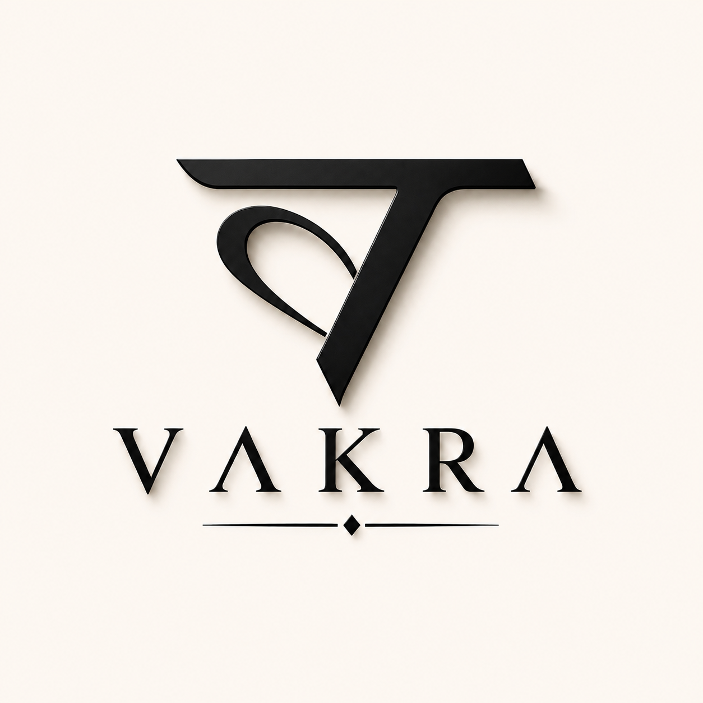

VAKRA
We design, animate, build, grow and give ideas a voice.

Ideas don't follow straight lines.
VAKRA is a multidisciplinary creative-tech studio built by five minds with five different strengths. We bring design, motion, technology, growth and social thinking together to turn an idea into something people can see, use, remember and share.
One studio.
Five directions.
VAKRA /
DESIGN
Brand identities, visual systems, UI/UX, campaigns, packaging and everything that gives an idea its shape.
↗ 02VAKRA /
ANIMATION
Logo motion, ads, reels, 2D/3D experiments, micro-interactions and movement that makes brands feel alive.
↗ 03VAKRA /
TECH
Landing pages, websites, digital experiences, prototypes, integrations and useful tools built around the idea.
↗ 04VAKRA /
GROWTH
Positioning, research, launch strategy, audience thinking, campaigns and the path from attention to action.
↗ 05VAKRA /
SOCIAL
Content systems, storytelling, social strategy, reels, carousels, community and the voice people meet online.
↗From thought
to presence.
Understand
We find the idea, audience, problem and opportunity before making anything.
Direction
We shape the identity, positioning, experience and creative route.
Build
Five disciplines work together to turn the direction into a real digital presence.
Launch
We put it in front of people, learn from the response and keep improving.
Let's make
it VAKRA.
Have an idea, a brand that needs a new direction, or a digital experience waiting to be built? Tell us what you're thinking.
hello@vakra.studio ↗